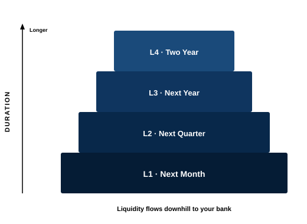

25 Basis Points · locked 2 years
Layered Cash Management
All decisions start with a review of your historical cash flows and future cash needs. Then operating cash is scheduled by duration so liquidity is available when bills come due.
Before any portfolio conversation, we map how money actually moves. That means looking at historical cash flows and the bills, distributions, payroll, dues, grants, and reserves that are coming. The point is simple: know what must stay available, and when.
Only after that map is clear do we decide what belongs in Layered Cash Management and whether longer reserves belong in the Securities Investment Pyramid™.
- Review historical inflows and outflows
- Identify known near-term needs and contingency reserves
- Separate operating cash from longer-horizon capital
- Then schedule operating surplus by duration
The structure
Built around when cash is needed
Once the cash-flow review is done, the first question is not “what should we buy?” It is “what must stay available, and when?” Layered Cash Management answers that question. It is built for surplus operating cash that still has a job: payroll, dues, benefits, grants, payables, and the reserve that keeps the organization steady.

Philosophy
Cash that pays bills is not an investment theme. It is a scheduling problem. We keep your bank as the front door, then place surplus cash into duration sleeves so money is ready when it is needed. As dates approach, liquidity flows downhill toward the bank. We do not chase yield by locking operating capital into products you cannot exit.
How we build it
From the cash-flow map we set an insured operating float at your bank, then schedule the rest across near-term, quarterly, annual, and optional second-year sleeves. Holdings are primarily U.S. Treasuries timed to that calendar. The fee is 25 basis points, locked for two years.
What this is not
It is not a substitute for your checking relationship. It is not a long-horizon equity mandate. And it is not a place for illiquid, high-fee products that look attractive on a slide and fail when cash is actually required.
Let's Discuss
Start with your cash-flow calendar. A conversation is not a commitment.